Introduction to Tidy Transcriptomics
Maria Doyle, Peter MacCallum Cancer Centre1
Stefano Mangiola, Walter and Eliza Hall Institute2
Source:vignettes/tidytranscriptomics.Rmd
tidytranscriptomics.RmdPart 1 Bulk RNA-seq Core
This workshop will present how to perform analysis of RNA sequencing data following the tidy data paradigm (Wickham and others 2014). The tidy data paradigm provides a standard way to organise data values within a dataset, where each variable is a column, each observation is a row, and data is manipulated using an easy-to-understand vocabulary. Most importantly, the data structure remains consistent across manipulation and analysis functions.
This can be achieved for RNA sequencing data with the tidybulk, tidyHeatmap (Mangiola and Papenfuss 2020) and tidyverse (Wickham et al. 2019) packages. The tidybulk package provides a tidy data structure and a modular framework for bulk transcriptional analyses. tidyHeatmap provides a tidy implementation of ComplexHeatmap. These packages are part of the tidytranscriptomics suite that introduces a tidy approach to RNA sequencing data representation and analysis
Acknowledgements
Some of the material in Part 1 was adapted from an R for RNA sequencing workshop first run here. Use of the airway and pasilla datasets was inspired by the DESeq2 vignette.

Poll: Will you code during this workshop?Poll: Do you have experience with transcriptomic analyses?Poll: Do you have experience with tidyverse?Introduction
Measuring gene expression on a genome-wide scale has become common practice over the last two decades or so, with microarrays predominantly used pre-2008. With the advent of next generation sequencing technology in 2008, an increasing number of scientists use this technology to measure and understand changes in gene expression in often complex systems. As sequencing costs have decreased, using RNA sequencing to simultaneously measure the expression of tens of thousands of genes for multiple samples has never been easier. The cost of these experiments has now moved from generating the data to storing and analysing it.
There are many steps involved in analysing an RNA sequencing dataset. Sequenced reads are aligned to a reference genome, then the number of reads mapped to each gene can be counted. This results in a table of counts, which is what we perform statistical analyses on in R. While mapping and counting are important and necessary tasks, today we will be starting from the count data and showing how differential expression analysis can be performed in a friendly way using the Bioconductor package, tidybulk.
First, let’s load all the packages we will need to analyse the data. Note that you should load the tidybulk library after the tidyverse core packages for best integration.
# load libraries # dataset library(airway) # tidyverse core packages library(tibble) library(dplyr) library(tidyr) library(readr) library(stringr) library(ggplot2) # tidyverse-friendly packages library(plotly) library(ggrepel) library(tidyHeatmap) library(tidybulk)
Plot settings. Set the colours and theme we will use for our plots.
# Use colourblind-friendly colours friendly_cols <- dittoSeq::dittoColors() # Set theme custom_theme <- list( scale_fill_manual(values = friendly_cols), scale_color_manual(values = friendly_cols), theme_bw() + theme( panel.border = element_blank(), axis.line = element_line(), panel.grid.major = element_line(size = 0.2), panel.grid.minor = element_line(size = 0.1), text = element_text(size = 12), legend.position = "bottom", strip.background = element_blank(), axis.title.x = element_text(margin = margin(t = 10, r = 10, b = 10, l = 10)), axis.title.y = element_text(margin = margin(t = 10, r = 10, b = 10, l = 10)), axis.text.x = element_text(angle = 30, hjust = 1, vjust = 1) ) )
Airway RNA sequencing dataset
Here we will perform our analysis using the data from the airway package. The airway data comes from the paper by (Himes et al. 2014); and it includes 8 samples from human airway smooth muscle cells, from 4 cell lines. For each cell line treated (with dexamethasone) and untreated (negative control) a sample has undergone RNA sequencing and gene counts have been generated.
Setting up the data
The airway data is stored as a Bioconductor RangedSummarizedExperiment object. We will convert this object into a tidybulk tibble. A tibble is the tidyverse table format.
In this workshop we will be using the tidyverse pipe %>%. This ‘pipes’ the output from the command on the left into the command on the right/below. Using the pipe is not essential but it reduces the amount of code we need to write when we have multiple steps (as we’ll see later). It also can make the steps clearer and easier to see. For more details on the pipe see here.
# load airway RNA sequencing data data(airway) # convert to tidybulk tibble counts_airway <- airway %>% tidybulk()
We can type the name of the object to view.
counts_airway #> # A tibble: 512,816 x 12 #> feature sample counts SampleName cell dex albut Run avgLength Experiment #> <fct> <fct> <int> <fct> <fct> <fct> <fct> <fct> <int> <fct> #> 1 ENSG00… SRR10… 679 GSM1275862 N613… untrt untrt SRR1… 126 SRX384345 #> 2 ENSG00… SRR10… 0 GSM1275862 N613… untrt untrt SRR1… 126 SRX384345 #> 3 ENSG00… SRR10… 467 GSM1275862 N613… untrt untrt SRR1… 126 SRX384345 #> 4 ENSG00… SRR10… 260 GSM1275862 N613… untrt untrt SRR1… 126 SRX384345 #> 5 ENSG00… SRR10… 60 GSM1275862 N613… untrt untrt SRR1… 126 SRX384345 #> 6 ENSG00… SRR10… 0 GSM1275862 N613… untrt untrt SRR1… 126 SRX384345 #> 7 ENSG00… SRR10… 3251 GSM1275862 N613… untrt untrt SRR1… 126 SRX384345 #> 8 ENSG00… SRR10… 1433 GSM1275862 N613… untrt untrt SRR1… 126 SRX384345 #> 9 ENSG00… SRR10… 519 GSM1275862 N613… untrt untrt SRR1… 126 SRX384345 #> 10 ENSG00… SRR10… 394 GSM1275862 N613… untrt untrt SRR1… 126 SRX384345 #> # … with 512,806 more rows, and 2 more variables: Sample <fct>, BioSample <fct>
The counts_tt object contains information about genes and samples, the first column has the Ensembl gene identifier, the second column has the sample identifier and the third column has the gene transcription abundance. The abundance is the number of reads aligning to the gene in each experimental sample. The remaining columns include sample-wise information. The dex column tells us whether the samples are treated or untreated and the cell column tells us what cell line they are from.
We can shorten the sample names. We can remove the SRR1039 prefix that’s present in all of them, as shorter names can fit better in some of the plots we will create. We can use mutate() together with str_replace() to remove the SRR1039 string from the sample column.
counts_format <- counts_airway %>% mutate(sample=str_remove(sample, "SRR1039"))
Adding gene symbols
We can get the gene symbols for these Ensembl gene ids using the Bioconductor annotation package for human, org.Hs.eg.db and add them as a column using mutate again.
counts_tt <- counts_format %>% mutate(symbol = AnnotationDbi::mapIds(org.Hs.eg.db::org.Hs.eg.db, keys = as.character(feature), keytype = "ENSEMBL", column="SYMBOL", multiVals = "first")) #> #> 'select()' returned 1:many mapping between keys and columns counts_tt #> # A tibble: 512,816 x 13 #> feature sample counts SampleName cell dex albut Run avgLength Experiment #> <fct> <chr> <int> <fct> <fct> <fct> <fct> <fct> <int> <fct> #> 1 ENSG00… 508 679 GSM1275862 N613… untrt untrt SRR1… 126 SRX384345 #> 2 ENSG00… 508 0 GSM1275862 N613… untrt untrt SRR1… 126 SRX384345 #> 3 ENSG00… 508 467 GSM1275862 N613… untrt untrt SRR1… 126 SRX384345 #> 4 ENSG00… 508 260 GSM1275862 N613… untrt untrt SRR1… 126 SRX384345 #> 5 ENSG00… 508 60 GSM1275862 N613… untrt untrt SRR1… 126 SRX384345 #> 6 ENSG00… 508 0 GSM1275862 N613… untrt untrt SRR1… 126 SRX384345 #> 7 ENSG00… 508 3251 GSM1275862 N613… untrt untrt SRR1… 126 SRX384345 #> 8 ENSG00… 508 1433 GSM1275862 N613… untrt untrt SRR1… 126 SRX384345 #> 9 ENSG00… 508 519 GSM1275862 N613… untrt untrt SRR1… 126 SRX384345 #> 10 ENSG00… 508 394 GSM1275862 N613… untrt untrt SRR1… 126 SRX384345 #> # … with 512,806 more rows, and 3 more variables: Sample <fct>, #> # BioSample <fct>, symbol <chr>
With tidyverse, all above operations can be linked with the %>%, as shown below. This has the benefits that
- no temporary variables need to be created
- less typing is required
- the steps can be seen more clearly.
counts_tt <- airway %>% tidybulk() %>% mutate(sample=str_remove(sample, "SRR1039")) %>% mutate(symbol = AnnotationDbi::mapIds(org.Hs.eg.db::org.Hs.eg.db, keys = as.character(feature), keytype = "ENSEMBL", column="SYMBOL", multiVals = "first")) #> 'select()' returned 1:many mapping between keys and columns
From this tidybulk tibble, we can perform differential expression analysis with the tidybulk package.
Filtering lowly transcribed genes
Genes with very low counts across all libraries provide little evidence for differential expression and they can interfere with some of the statistical approximations that are used later in the pipeline. They also add to the multiple testing burden when estimating false discovery rates, reducing power to detect differentially expressed genes. These genes should be filtered out prior to further analysis.
We can perform the filtering using tidybulk keep_abundant or identify_abundant. These functions can use the edgeR filterByExpr function described in (Law et al. 2016) to automatically identify the genes with adequate abundance for differential expression testing. By default, this will keep genes with ~10 counts in a minimum number of samples, the number of the samples in the smallest group. In this dataset the smallest group size is four (as we have four dex-treated samples vs four untreated). Alternatively, we could use identify_abundant to identify which genes are abundant or not (TRUE/FALSE), rather than just keeping the abundant ones.
# Filtering counts counts_filtered <- counts_tt %>% keep_abundant(factor_of_interest=dex) # take a look counts_filtered #> # A tibble: 127,408 x 14 #> feature sample counts SampleName cell dex albut Run avgLength Experiment #> <fct> <chr> <int> <fct> <fct> <fct> <fct> <fct> <int> <fct> #> 1 ENSG00… 508 679 GSM1275862 N613… untrt untrt SRR1… 126 SRX384345 #> 2 ENSG00… 508 467 GSM1275862 N613… untrt untrt SRR1… 126 SRX384345 #> 3 ENSG00… 508 260 GSM1275862 N613… untrt untrt SRR1… 126 SRX384345 #> 4 ENSG00… 508 60 GSM1275862 N613… untrt untrt SRR1… 126 SRX384345 #> 5 ENSG00… 508 3251 GSM1275862 N613… untrt untrt SRR1… 126 SRX384345 #> 6 ENSG00… 508 1433 GSM1275862 N613… untrt untrt SRR1… 126 SRX384345 #> 7 ENSG00… 508 519 GSM1275862 N613… untrt untrt SRR1… 126 SRX384345 #> 8 ENSG00… 508 394 GSM1275862 N613… untrt untrt SRR1… 126 SRX384345 #> 9 ENSG00… 508 172 GSM1275862 N613… untrt untrt SRR1… 126 SRX384345 #> 10 ENSG00… 508 2112 GSM1275862 N613… untrt untrt SRR1… 126 SRX384345 #> # … with 127,398 more rows, and 4 more variables: Sample <fct>, #> # BioSample <fct>, symbol <chr>, .abundant <lgl>
After running keep_abundant we have a column called .abundant containing TRUE (identify_abundant would have TRUE/FALSE).
Scaling counts to normalise
Scaling of counts, normalisation, is performed to eliminate uninteresting differences between samples due to sequencing depth or composition. A more detailed explanation can be found here. In the tidybulk package the function scale_abundance generates scaled counts, with scaling factors calculated on abundant (filtered) transcripts and applied to all transcripts. We can choose from different normalisation methods. Here we will use the default, edgeR’s trimmed mean of M values (TMM), (Robinson and Oshlack 2010). TMM normalisation (and most scaling normalisation methods) scale relative to one sample.
# Scaling counts counts_scaled <- counts_filtered %>% scale_abundance() # take a look counts_scaled #> # A tibble: 127,408 x 17 #> feature sample counts SampleName cell dex albut Run avgLength Experiment #> <fct> <chr> <int> <fct> <fct> <fct> <fct> <fct> <int> <fct> #> 1 ENSG00… 508 679 GSM1275862 N613… untrt untrt SRR1… 126 SRX384345 #> 2 ENSG00… 508 467 GSM1275862 N613… untrt untrt SRR1… 126 SRX384345 #> 3 ENSG00… 508 260 GSM1275862 N613… untrt untrt SRR1… 126 SRX384345 #> 4 ENSG00… 508 60 GSM1275862 N613… untrt untrt SRR1… 126 SRX384345 #> 5 ENSG00… 508 3251 GSM1275862 N613… untrt untrt SRR1… 126 SRX384345 #> 6 ENSG00… 508 1433 GSM1275862 N613… untrt untrt SRR1… 126 SRX384345 #> 7 ENSG00… 508 519 GSM1275862 N613… untrt untrt SRR1… 126 SRX384345 #> 8 ENSG00… 508 394 GSM1275862 N613… untrt untrt SRR1… 126 SRX384345 #> 9 ENSG00… 508 172 GSM1275862 N613… untrt untrt SRR1… 126 SRX384345 #> 10 ENSG00… 508 2112 GSM1275862 N613… untrt untrt SRR1… 126 SRX384345 #> # … with 127,398 more rows, and 7 more variables: Sample <fct>, #> # BioSample <fct>, symbol <chr>, .abundant <lgl>, TMM <dbl>, #> # multiplier <dbl>, counts_scaled <dbl>
After we run scale_abundance we should see some columns have been added at the end. The counts_scaled column contains the scaled counts.
We can visualise the difference of abundance densities before and after scaling. As tidybulk output is compatible with tidyverse, we can simply pipe it into standard tidyverse functions such as filter, pivot_longer and ggplot. We can also take advantage of ggplot’s facet_wrap to easily create multiple plots.
counts_scaled %>% pivot_longer(cols = c("counts", "counts_scaled"), names_to = "source", values_to = "abundance") %>% ggplot(aes(x=abundance + 1, color=sample)) + geom_density() + facet_wrap(~source) + scale_x_log10() + custom_theme
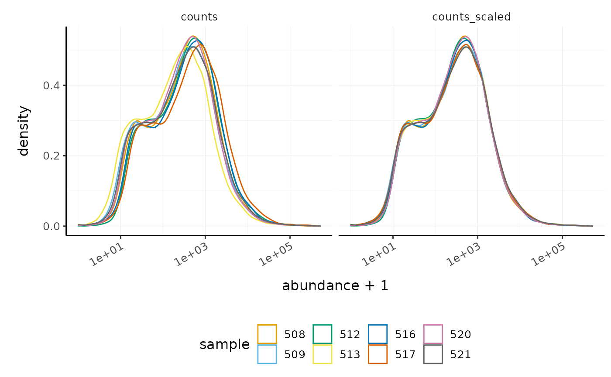
In this dataset the distributions of the counts are not very different to each other before scaling but scaling does make the distributions more similar. If we saw a sample with a very different distribution we may need to investigate it.
As tidybulk smoothly integrates with ggplot2 and other tidyverse packages it can save on typing and make plots easier to generate. Compare the code for creating density plots with tidybulk versus standard base R below (standard code adapted from (Law et al. 2016)).
tidybulk
# tidybulk airway %>% tidybulk() %>% keep_abundant(factor_of_interest=dex) %>% scale_abundance() %>% pivot_longer(cols = c("counts", "counts_scaled"), names_to = "source", values_to = "abundance") %>% ggplot(aes(x=abundance + 1, color=sample)) + geom_density() + facet_wrap(~source) + scale_x_log10() + custom_theme
base R using edgeR
# Example code, no need to run # Prepare data set dgList <- SE2DGEList(airway) group <- factor(dgList$samples$dex) keep.exprs <- filterByExpr(dgList, group=group) dgList <- dgList[keep.exprs,, keep.lib.sizes=FALSE] nsamples <- ncol(dgList) logcounts <- log2(dgList$counts) # Setup graphics col <- RColorBrewer::brewer.pal(nsamples, "Paired") par(mfrow=c(1,2)) # Plot raw counts plot(density(logcounts[,1]), col=col[1], lwd=2, ylim=c(0,0.26), las=2, main="", xlab="") title(main="Counts") for (i in 2:nsamples){ den <- density(logcounts[,i]) lines(den$x, den$y, col=col[i], lwd=2) } legend("topright", legend=dgList$samples$Run, text.col=col, bty="n") # Plot scaled counts dgList_norm <- calcNormFactors(dgList) lcpm_n <- cpm(dgList_norm, log=TRUE) plot(density(lcpm_n[,1]), col=col[1], lwd=2, ylim=c(0,0.26), las=2, main="", xlab="") title("Counts scaled") for (i in 2:nsamples){ den <- density(lcpm_n[,i]) lines(den$x, den$y, col=col[i], lwd=2) } legend("topright", legend=dgList_norm$samples$Run, text.col=col, bty="n")
Exploratory analyses
Dimensionality reduction
By far, one of the most important plots we make when we analyse RNA sequencing data are principal-component analysis (PCA) or multi-dimensional scaling (MDS) plots. We reduce the dimensions of the data to identify the greatest sources of variation in the data. A principal components analysis is an example of an unsupervised analysis, where we don’t need to specify the groups. If your experiment is well controlled and has worked well, what we hope to see is that the greatest sources of variation in the data are the treatments/groups we are interested in. It is also an incredibly useful tool for quality control and checking for outliers. We can use the reduce_dimensions function to calculate the dimensions.
# Get principal components counts_scal_PCA <- counts_scaled %>% reduce_dimensions(method="PCA") #> Getting the 500 most variable genes #> Fraction of variance explained by the selected principal components #> # A tibble: 2 x 2 #> `Fraction of variance` PC #> <dbl> <int> #> 1 0.355 1 #> 2 0.309 2 #> tidybulk says: to access the raw results do `attr(..., "internals")$PCA`
Poll: What fraction of variance is explained by PC3?
See ?reduce_dimensions for how to get additional dimensions.This joins the result to the counts object.
# Take a look counts_scal_PCA #> # A tibble: 127,408 x 19 #> feature sample counts SampleName cell dex albut Run avgLength Experiment #> <fct> <chr> <int> <fct> <fct> <fct> <fct> <fct> <int> <fct> #> 1 ENSG00… 508 679 GSM1275862 N613… untrt untrt SRR1… 126 SRX384345 #> 2 ENSG00… 508 467 GSM1275862 N613… untrt untrt SRR1… 126 SRX384345 #> 3 ENSG00… 508 260 GSM1275862 N613… untrt untrt SRR1… 126 SRX384345 #> 4 ENSG00… 508 60 GSM1275862 N613… untrt untrt SRR1… 126 SRX384345 #> 5 ENSG00… 508 3251 GSM1275862 N613… untrt untrt SRR1… 126 SRX384345 #> 6 ENSG00… 508 1433 GSM1275862 N613… untrt untrt SRR1… 126 SRX384345 #> 7 ENSG00… 508 519 GSM1275862 N613… untrt untrt SRR1… 126 SRX384345 #> 8 ENSG00… 508 394 GSM1275862 N613… untrt untrt SRR1… 126 SRX384345 #> 9 ENSG00… 508 172 GSM1275862 N613… untrt untrt SRR1… 126 SRX384345 #> 10 ENSG00… 508 2112 GSM1275862 N613… untrt untrt SRR1… 126 SRX384345 #> # … with 127,398 more rows, and 9 more variables: Sample <fct>, #> # BioSample <fct>, symbol <chr>, .abundant <lgl>, TMM <dbl>, #> # multiplier <dbl>, counts_scaled <dbl>, PC1 <dbl>, PC2 <dbl>
For plotting, we can select just the sample-wise information with pivot_sample.
# take a look counts_scal_PCA %>% pivot_sample() #> # A tibble: 8 x 15 #> sample SampleName cell dex albut Run avgLength Experiment Sample #> <chr> <fct> <fct> <fct> <fct> <fct> <int> <fct> <fct> #> 1 508 GSM1275862 N613… untrt untrt SRR1… 126 SRX384345 SRS50… #> 2 509 GSM1275863 N613… trt untrt SRR1… 126 SRX384346 SRS50… #> 3 512 GSM1275866 N052… untrt untrt SRR1… 126 SRX384349 SRS50… #> 4 513 GSM1275867 N052… trt untrt SRR1… 87 SRX384350 SRS50… #> 5 516 GSM1275870 N080… untrt untrt SRR1… 120 SRX384353 SRS50… #> 6 517 GSM1275871 N080… trt untrt SRR1… 126 SRX384354 SRS50… #> 7 520 GSM1275874 N061… untrt untrt SRR1… 101 SRX384357 SRS50… #> 8 521 GSM1275875 N061… trt untrt SRR1… 98 SRX384358 SRS50… #> # … with 6 more variables: BioSample <fct>, .abundant <lgl>, TMM <dbl>, #> # multiplier <dbl>, PC1 <dbl>, PC2 <dbl>
We can now plot the reduced dimensions.
# PCA plot counts_scal_PCA %>% pivot_sample() %>% ggplot(aes(x=PC1, y=PC2, colour=dex, shape=cell)) + geom_point() + geom_text_repel(aes(label=sample), show.legend = FALSE) + custom_theme
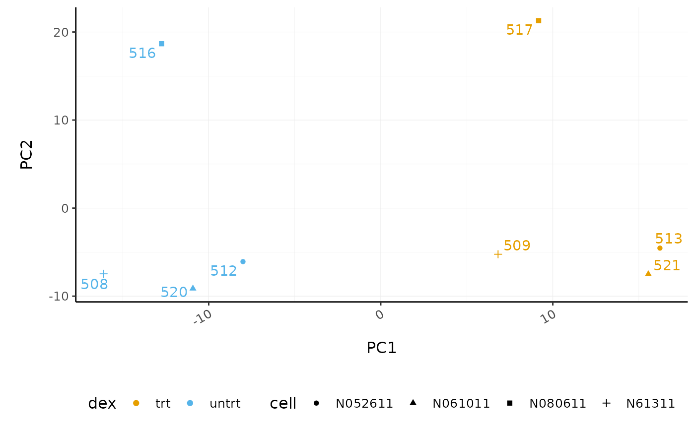
The samples separate by treatment on PC1 which is what we hope to see. PC2 separates the N080611 cell line from the other samples, indicating a greater difference between that cell line and the others.
Hierarchical clustering with heatmaps
An alternative to principal component analysis for examining relationships between samples is using hierarchical clustering. Heatmaps are a nice visualisation to examine hierarchical clustering of your samples. tidybulk has a simple function we can use, keep_variable, to extract the most variable genes which we can then plot with tidyHeatmap.
counts_scaled %>% # extract 500 most variable genes keep_variable( .abundance = counts_scaled, top = 500) %>% # create heatmap heatmap( .column = sample, .row = feature, .value = counts_scaled, transform = log1p ) %>% add_tile(dex) %>% add_tile(cell) #> Getting the 500 most variable genes
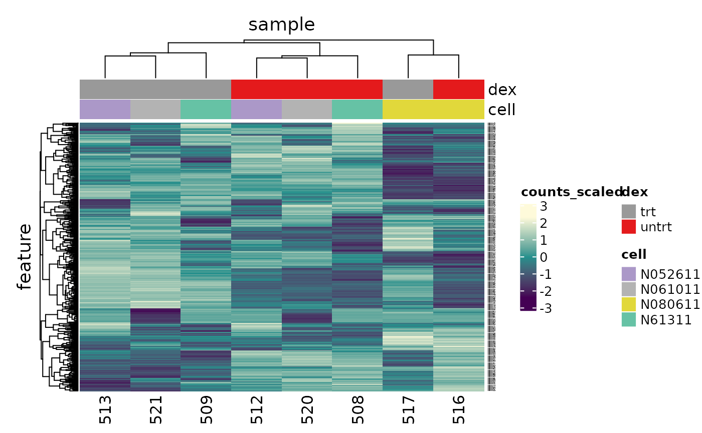
In the heatmap we can see the samples cluster into two groups, treated and untreated, for three of the cell lines, and the cell line (N080611) again is further away from the others.
Tidybulk enables a simplified way of generating a clustered heatmap of variable genes. Compare the code below for tidybulk versus a base R method.
base R using edgeR
# Example code, no need to run dgList <- SE2DGEList(airway) group <- factor(dgList$samples$dex) keep.exprs <- filterByExpr(dgList, group=group) dgList <- dgList[keep.exprs,, keep.lib.sizes=FALSE] dgList <- calcNormFactors(dgList) logcounts <- cpm(dgList, log=TRUE) var_genes <- apply(logcounts, 1, var) select_var <- names(sort(var_genes, decreasing=TRUE))[1:500] highly_variable_lcpm <- logcounts[select_var,] colours <- c("#440154FF", "#21908CFF", "#fefada" ) col.group <- c("red","grey")[group] gplots::heatmap.2(highly_variable_lcpm, col=colours, trace="none", ColSideColors=col.group, scale="row")
Differential expression
Now that we are happy that the data looks good, we can continue to testing for differentially expressed (DE) genes. We will use the test_differential_abundance from tidybulk which currently uses edgeR (Robinson, McCarthy, and Smyth 2010) to perform the differential expression analysis. We give test_differential_abundance our tidybulk counts object and a formula, specifying the column that contains our groups to be compared. If all our samples were from the same cell line, and there were no additional factors contributing variance such as batch differences, we could use the formula 0 + dex. However, each treated and untreated sample is from a different cell line so we add the cell line as an additional factor 0 + dex + cell. We also provide the names of the groups we want to compare to .contrasts (e.g. .contrasts = c("dextreat - dexuntreat")).
We only have one contrast here so we omit the suffix.
counts_de <- counts_filtered %>% test_differential_abundance( .formula = ~ 0 + dex + cell, .contrasts = c("dextrt - dexuntrt"), omit_contrast_in_colnames = TRUE ) #> tidybulk says: All methods use raw counts, #> irrespective of if scale_abundance or adjust_abundance have been calculated, #> therefore it is essential to add covariates such as batch effects (if applicable) in the formula. #> tidybulk says: The design column names are "dextrt, dexuntrt, cellN061011, cellN080611, cellN61311" #> tidybulk says: to access the raw results (fitted GLM) do `attr(..., "internals")$edgeR`
The results will be joined to our counts for every sample.
# take a look counts_de #> # A tibble: 127,408 x 19 #> feature sample counts SampleName cell dex albut Run avgLength Experiment #> <chr> <chr> <int> <fct> <fct> <fct> <fct> <fct> <int> <fct> #> 1 ENSG00… 508 679 GSM1275862 N613… untrt untrt SRR1… 126 SRX384345 #> 2 ENSG00… 508 467 GSM1275862 N613… untrt untrt SRR1… 126 SRX384345 #> 3 ENSG00… 508 260 GSM1275862 N613… untrt untrt SRR1… 126 SRX384345 #> 4 ENSG00… 508 60 GSM1275862 N613… untrt untrt SRR1… 126 SRX384345 #> 5 ENSG00… 508 3251 GSM1275862 N613… untrt untrt SRR1… 126 SRX384345 #> 6 ENSG00… 508 1433 GSM1275862 N613… untrt untrt SRR1… 126 SRX384345 #> 7 ENSG00… 508 519 GSM1275862 N613… untrt untrt SRR1… 126 SRX384345 #> 8 ENSG00… 508 394 GSM1275862 N613… untrt untrt SRR1… 126 SRX384345 #> 9 ENSG00… 508 172 GSM1275862 N613… untrt untrt SRR1… 126 SRX384345 #> 10 ENSG00… 508 2112 GSM1275862 N613… untrt untrt SRR1… 126 SRX384345 #> # … with 127,398 more rows, and 9 more variables: Sample <fct>, #> # BioSample <fct>, symbol <chr>, .abundant <lgl>, logFC <dbl>, logCPM <dbl>, #> # F <dbl>, PValue <dbl>, FDR <dbl>
If we just want a table of differentially expressed genes we can select the transcript-wise information with pivot_transcript.
# take a look counts_de %>% pivot_transcript() #> # A tibble: 15,926 x 9 #> feature albut symbol .abundant logFC logCPM F PValue FDR #> <chr> <fct> <chr> <lgl> <dbl> <dbl> <dbl> <dbl> <dbl> #> 1 ENSG00000000… untrt TSPAN6 TRUE -0.390 5.06 32.8 3.12e-4 0.00283 #> 2 ENSG00000000… untrt DPM1 TRUE 0.198 4.61 6.90 2.81e-2 0.0770 #> 3 ENSG00000000… untrt SCYL3 TRUE 0.0292 3.48 0.0969 7.63e-1 0.844 #> 4 ENSG00000000… untrt C1orf112 TRUE -0.124 1.47 0.377 5.55e-1 0.682 #> 5 ENSG00000000… untrt CFH TRUE 0.417 8.09 29.3 4.63e-4 0.00376 #> 6 ENSG00000001… untrt FUCA2 TRUE -0.250 5.91 14.9 4.05e-3 0.0186 #> 7 ENSG00000001… untrt GCLC TRUE -0.0581 4.84 0.167 6.92e-1 0.794 #> 8 ENSG00000001… untrt NFYA TRUE -0.509 4.13 44.9 1.00e-4 0.00126 #> 9 ENSG00000001… untrt STPG1 TRUE -0.136 3.12 1.04 3.35e-1 0.478 #> 10 ENSG00000001… untrt NIPAL3 TRUE -0.0500 7.04 0.350 5.69e-1 0.695 #> # … with 15,916 more rows
Now we have columns with our log-fold change (logFC), false-discovery rate (FDR) and probability value (p-value). logFC is log2(treated/untreated).
Tidybulk enables a simplified way of performing an RNA sequencing differential expression analysis (with the benefit of smoothly integrating with ggplot2 and other tidyverse packages). Compare the code for a tidybulk edgeR analysis versus standard edgeR below.
standard edgeR
# Example code, no need to run dgList <- SE2DGEList(airway) group <- factor(dgList$samples$dex) keep.exprs <- filterByExpr(dgList, group=group) dgList <- dgList[keep.exprs,, keep.lib.sizes=FALSE] dgList <- calcNormFactors(dgList) cell <- factor(dgList$samples$cell) design <- model.matrix(~ 0 + group + cell) dgList <- estimateDisp(dgList, design) fit <- glmQLFit(dgList, design) TvsU <- makeContrasts(TvsU=grouptrt-groupuntrt, levels=design) qlf <- glmQLFTest(fit, contrast=TvsU)
Table of differentially expressed genes
We can write out our differentially expressed genes to a file that can be loaded into e.g. Excel. write_tsv will create a tab-separated file.
# save results counts_de %>% pivot_transcript() %>% write_tsv("de_results.tsv")
Counting differentially expressed genes
In order to decide which genes are differentially expressed, we usually take a cut-off of 0.05 on the FDR (or adjusted P value), NOT the raw p-value. This is because we are testing many (thousands) genes, and the chances of finding differentially expressed genes is very high when you do that many tests. Hence we need to control the false discovery rate, which is the adjusted p-value column in the results table. What this means is that if 100 genes are significant at a 5% false discovery rate, we are willing to accept that 5 will be false positives.
We can count how many differentially expressed genes there are. We’ll filter on FDR 0.05.
counts_de %>% filter(FDR < 0.05) %>% summarise(num_de = n_distinct(feature)) #> # A tibble: 1 x 1 #> num_de #> <int> #> 1 4967
Poll: How many differentially expressed genes are there for FDR < 0.01 and abs(logFC) > 2?Extracting top differentially expressed genes
We can see the top genes by smallest p-value. We’ll take a look at the top 6.
topgenes <- counts_de %>% pivot_transcript() %>% arrange(PValue) %>% head(6) topgenes #> # A tibble: 6 x 9 #> feature albut symbol .abundant logFC logCPM F PValue FDR #> <chr> <fct> <chr> <lgl> <dbl> <dbl> <dbl> <dbl> <dbl> #> 1 ENSG00000165995 untrt CACNB2 TRUE 3.28 4.51 1575. 3.34e-11 4.07e-7 #> 2 ENSG00000109906 untrt ZBTB16 TRUE 7.15 4.15 1429. 5.11e-11 4.07e-7 #> 3 ENSG00000146250 untrt PRSS35 TRUE -2.76 3.91 807. 6.16e-10 2.57e-6 #> 4 ENSG00000162493 untrt PDPN TRUE 1.88 5.68 768. 7.60e-10 2.57e-6 #> 5 ENSG00000152583 untrt SPARCL1 TRUE 4.56 5.53 721. 1.00e- 9 2.57e-6 #> 6 ENSG00000120129 untrt DUSP1 TRUE 2.94 7.31 694. 1.18e- 9 2.57e-6
We can extract the symbols for these top genes to use in some of the plots we will make.
topgenes_symbols <- topgenes %>% pull(symbol) # take a look topgenes_symbols #> ENSG00000165995 ENSG00000109906 ENSG00000146250 ENSG00000162493 ENSG00000152583 #> "CACNB2" "ZBTB16" "PRSS35" "PDPN" "SPARCL1" #> ENSG00000120129 #> "DUSP1"
Plots after testing for differentially expressed
Volcano plots
Volcano plots are a useful genome-wide plot for checking that the analysis looks good. Volcano plots enable us to visualise the significance of change (p-value) versus the fold change (logFC). Highly significant genes are towards the top of the plot. We can also colour significant genes (e.g. genes with false-discovery rate < 0.05)
# volcano plot, minimal counts_de %>% ggplot(aes(x=logFC, y=PValue, colour=FDR < 0.05)) + geom_point() + scale_y_continuous(trans = "log10_reverse") + custom_theme
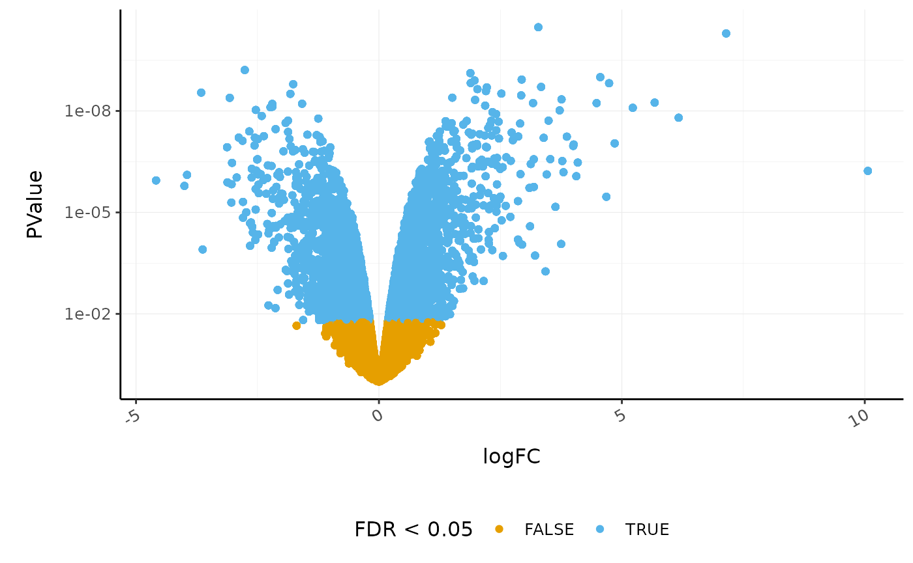
A more informative plot, integrating some of the packages in tidyverse.
counts_de %>% pivot_transcript() %>% # Subset data mutate(significant = FDR<0.05 & abs(logFC) >=2) %>% mutate(symbol = ifelse(symbol %in% topgenes_symbols, as.character(symbol), "")) %>% # Plot ggplot(aes(x = logFC, y = PValue, label=symbol)) + geom_point(aes(color = significant, size = significant, alpha=significant)) + geom_text_repel() + # Custom scales custom_theme + scale_y_continuous(trans = "log10_reverse") + scale_color_manual(values=c("black", "#e11f28")) + scale_size_discrete(range = c(0, 2)) #> Scale for 'colour' is already present. Adding another scale for 'colour', #> which will replace the existing scale.
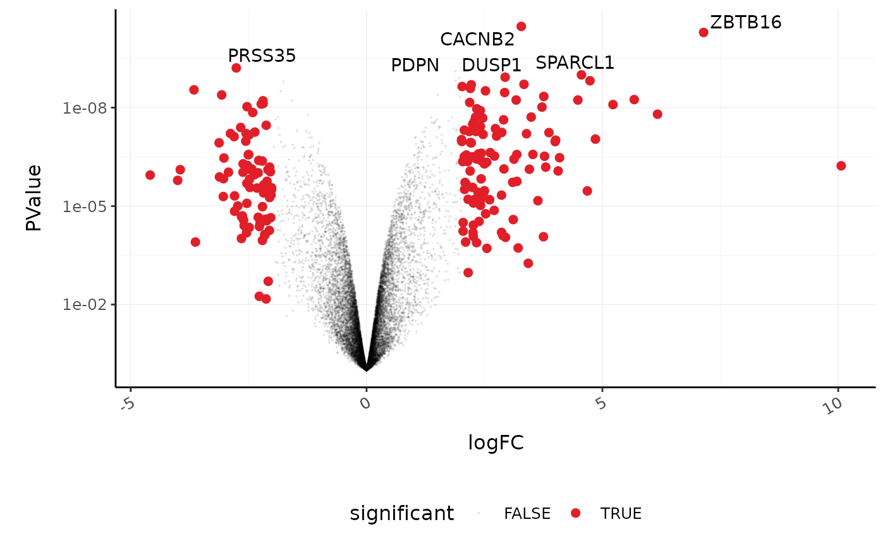
Stripcharts
Before following up on the differentially expressed genes with further lab work, it is also recommended to have a look at the expression levels of the individual samples for the genes of interest. We can use stripcharts to do this. These will help show if expression is consistent amongst replicates in the groups.
With stripcharts we can see if replicates tend to group together and how the expression compares to the other groups. We’ll also add a box plot to show the distribution.
strip_chart <- counts_scaled %>% # extract counts for top differentially expressed genes filter(symbol %in% topgenes_symbols) %>% # make faceted stripchart ggplot(aes(x = dex, y = counts_scaled + 1, fill = dex, label = sample)) + geom_boxplot() + geom_jitter() + facet_wrap(~symbol) + scale_y_log10()+ custom_theme strip_chart
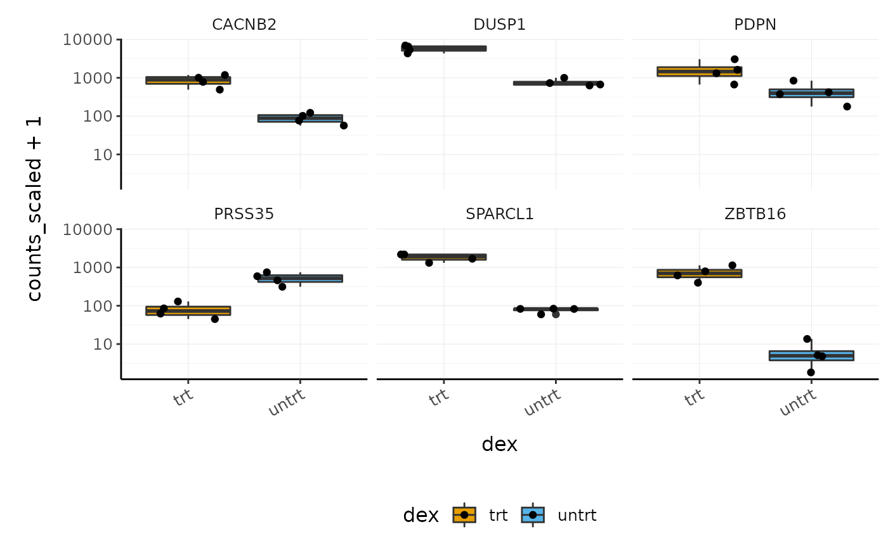
We can also easily check the raw and scaled counts for these genes.
counts_scaled %>% # extract counts for top differentially expressed genes filter(symbol %in% topgenes_symbols) %>% # reshape to create column ("source") containing the raw and scaled counts pivot_longer( c(counts, counts_scaled), names_to = "source", values_to = "count" ) %>% # make faceted stripchart ggplot(aes(x = source, y = count + 1, fill = dex)) + geom_boxplot() + facet_wrap(~symbol) + scale_y_log10() + custom_theme
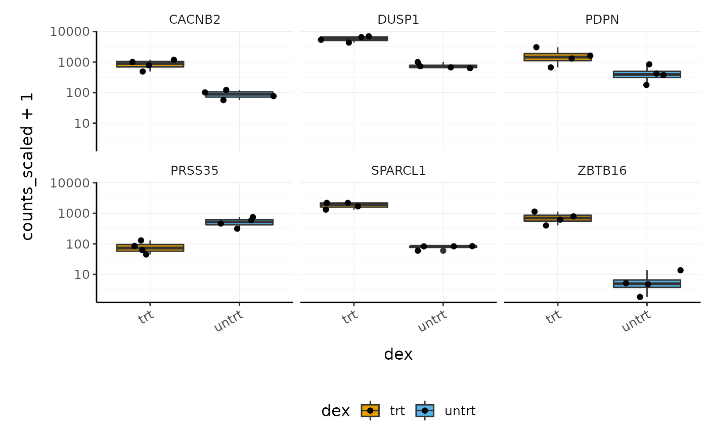
Interactive Plots
A really nice feature of using tidyverse and ggplot2 is that we can make interactive plots quite easily using the plotly package. This can be very useful for exploring what genes or samples are in the plots. We can make interactive plots directly from our ggplot2 object (strip_chart). Having label in the aes is useful to visualise the identifier of the data point (here the sample id) or other variables when we hover over the plot.
We can also specify which parameters from the aes we want to show up when we hover over the plot with tooltip.
Automatic bibliography
Tidybulk provides a handy function called get_bibliography that you can use to obtain the references for the methods used. The references are in BibTeX format and can be imported into your reference manager.
get_bibliography(counts_de) #> @article{wickham2019welcome, #> title={Welcome to the Tidyverse}, #> author={Wickham, Hadley and Averick, Mara and Bryan, Jennifer and Chang, Winston and McGowan, Lucy D'Agostino and Francois, Romain and Grolemund, Garrett and Hayes, Alex and Henry, Lionel and Hester, Jim and others}, #> journal={Journal of Open Source Software}, #> volume={4}, #> number={43}, #> pages={1686}, #> year={2019} #> } #> @article{robinson2010edger, #> title={edgeR: a Bioconductor package for differential expression analysis of digital gene expression data}, #> author={Robinson, Mark D and McCarthy, Davis J and Smyth, Gordon K}, #> journal={Bioinformatics}, #> volume={26}, #> number={1}, #> pages={139--140}, #> year={2010}, #> publisher={Oxford University Press} #> } #> @incollection{smyth2005limma, #> title={Limma: linear models for microarray data}, #> author={Smyth, Gordon K}, #> booktitle={Bioinformatics and computational biology solutions using R and Bioconductor}, #> pages={397--420}, #> year={2005}, #> publisher={Springer} #> }
Key Points
- RNA sequencing data can be represented and analysed in a ‘tidy’ way using tidybulk and the tidyverse
- With the modularity offered by piping we don’t need to create variables, unless an object is used more than one. This improves robustness of the code.
- The principles of tidy transcriptomics are to interface as much as possible with commonly known manipulation and visualisation tools, rather than creating custom functions.
- Some of the key steps in an RNA sequencing analysis are (i) filtering lowly abundant transcripts, (ii) adjusting for differences in sequencing depth and composition, (iii) testing for differential expression
- Dimensionality reduction (PCA or MDS) plots are very important for exploring the data
- Density plots, volcano plots, strip-charts and heatmaps are useful visualisation tools for evaluating the hypothesis testing.
Supplementary
Some things we don’t have time to cover in Part 1 of this workshop can be found in the Supplementary material.
Exercises
Try to apply what you’ve learned to another dataset. This dataset was generated from the pasilla package, which obtained the data from the paper by (Brooks et al. 2011). Here we provide it as a SummarizedExperiment object. The dataset has 7 samples from Drosophila (fruitfly): 3 treated with siRNA knockdown of the pasilla gene and 4 untreated controls, noted in column “condition”. Some of the samples have been sequenced with paired-end sequencing and some with single-end, noted in column “type”.
Load the data and create the tidybulk object with:
data("pasilla", package = "rpharma2020tidytranscriptomics") counts_tt <- pasilla %>% tidybulk() %>% mutate(symbol = AnnotationDbi::mapIds(org.Dm.eg.db::org.Dm.eg.db, keys=as.character(feature), keytype = "FLYBASE", column="SYMBOL", multiVals = "first")) #> #> 'select()' returned 1:1 mapping between keys and columns
Poll:
1) What is the Fraction of Variance for PC1?
2) How many differentially expressed genes are there for treated vs untreated (FDR < 0.05)?
3) What is the FBgn id of the 10th most differentially expressed gene (by smallest P value)?Extra
1.4 What code can generate a heatmap of variable genes (starting from count_scaled)?
1.5 What code can you use to visualise expression of the pasilla gene (gene id: FBgn0261552)
1.6 What code can generate an interactive volcano plot that has gene ids showing on hover?
1.7 What code can generate a heatmap of the top 100 differentially expressed genes?
Part 2 Bulk RNA-seq Extended
Tidybulk ADD versus GET modes
In this Part 2 we will see action=“get” being used, so we will explain here what it is doing.
Every tidybulk function takes a tidybulk tibble as input, and
* action=“add” outputs the new information joined to the original input data frame (default) * action=“get” outputs the new information with the sample or transcript information, depending on what the analysis is
For example, with action=“add” (default), we can add the PCA dimensions to the original data set. So we still have a row for every transcript in every sample.
counts_scaled %>% reduce_dimensions( method = "PCA", action = "add") #> Getting the 500 most variable genes #> Fraction of variance explained by the selected principal components #> # A tibble: 2 x 2 #> `Fraction of variance` PC #> <dbl> <int> #> 1 0.355 1 #> 2 0.309 2 #> tidybulk says: to access the raw results do `attr(..., "internals")$PCA` #> # A tibble: 127,408 x 19 #> feature sample counts SampleName cell dex albut Run avgLength Experiment #> <fct> <chr> <int> <fct> <fct> <fct> <fct> <fct> <int> <fct> #> 1 ENSG00… 508 679 GSM1275862 N613… untrt untrt SRR1… 126 SRX384345 #> 2 ENSG00… 508 467 GSM1275862 N613… untrt untrt SRR1… 126 SRX384345 #> 3 ENSG00… 508 260 GSM1275862 N613… untrt untrt SRR1… 126 SRX384345 #> 4 ENSG00… 508 60 GSM1275862 N613… untrt untrt SRR1… 126 SRX384345 #> 5 ENSG00… 508 3251 GSM1275862 N613… untrt untrt SRR1… 126 SRX384345 #> 6 ENSG00… 508 1433 GSM1275862 N613… untrt untrt SRR1… 126 SRX384345 #> 7 ENSG00… 508 519 GSM1275862 N613… untrt untrt SRR1… 126 SRX384345 #> 8 ENSG00… 508 394 GSM1275862 N613… untrt untrt SRR1… 126 SRX384345 #> 9 ENSG00… 508 172 GSM1275862 N613… untrt untrt SRR1… 126 SRX384345 #> 10 ENSG00… 508 2112 GSM1275862 N613… untrt untrt SRR1… 126 SRX384345 #> # … with 127,398 more rows, and 9 more variables: Sample <fct>, #> # BioSample <fct>, symbol <chr>, .abundant <lgl>, TMM <dbl>, #> # multiplier <dbl>, counts_scaled <dbl>, PC1 <dbl>, PC2 <dbl>
Or with action= “get” we can add the PCA dimensions to the original data set selecting just the sample-wise columns. Note that we now have just one row for every sample.
counts_scaled %>% reduce_dimensions( method = "PCA", action = "get") #> Getting the 500 most variable genes #> Fraction of variance explained by the selected principal components #> # A tibble: 2 x 2 #> `Fraction of variance` PC #> <dbl> <int> #> 1 0.355 1 #> 2 0.309 2 #> tidybulk says: to access the raw results do `attr(..., "internals")$PCA` #> # A tibble: 8 x 15 #> sample SampleName cell dex albut Run avgLength Experiment Sample #> <chr> <fct> <fct> <fct> <fct> <fct> <int> <fct> <fct> #> 1 508 GSM1275862 N613… untrt untrt SRR1… 126 SRX384345 SRS50… #> 2 509 GSM1275863 N613… trt untrt SRR1… 126 SRX384346 SRS50… #> 3 512 GSM1275866 N052… untrt untrt SRR1… 126 SRX384349 SRS50… #> 4 513 GSM1275867 N052… trt untrt SRR1… 87 SRX384350 SRS50… #> 5 516 GSM1275870 N080… untrt untrt SRR1… 120 SRX384353 SRS50… #> 6 517 GSM1275871 N080… trt untrt SRR1… 126 SRX384354 SRS50… #> 7 520 GSM1275874 N061… untrt untrt SRR1… 101 SRX384357 SRS50… #> 8 521 GSM1275875 N061… trt untrt SRR1… 98 SRX384358 SRS50… #> # … with 6 more variables: BioSample <fct>, .abundant <lgl>, TMM <dbl>, #> # multiplier <dbl>, PC1 <dbl>, PC2 <dbl>
Comparison of differential analysis methods
tidybulk integrates several popular methods for differential transcript abundance testing: the edgeR quasi-likelihood (Chen, Lun, and Smyth 2016) (tidybulk default method), edgeR likelihood ratio (McCarthy, Chen, and Smyth 2012), limma-voom (Law et al. 2014) and DESeq2 (Love, Huber, and Anders 2014). A common question researchers have is which method to choose. Mike Love, DESeq2 author has this advice in his blog.
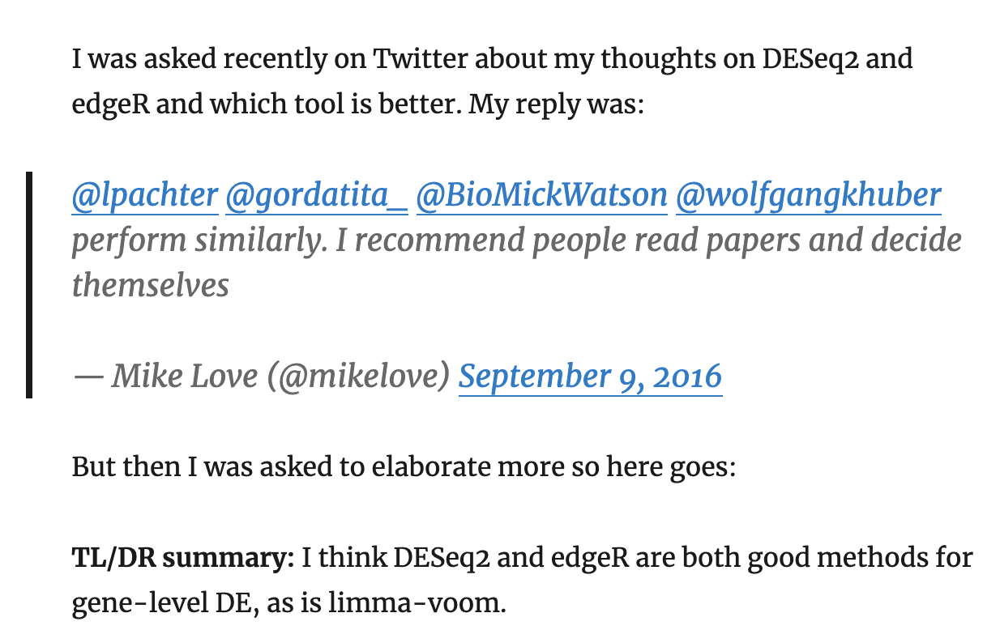
tidybulk can help you decide which method (or methods) to use, as it provides an easy way to run multiple and see how they compare.
We can perform differential analysis with several methods, and the results will be added to the original dataset.
As before, we first pre-process the data, creating a tibble and identifying abundant genes.
pasilla_de <- rpharma2020tidytranscriptomics::pasilla %>% # Convert SummarizedExperiment object to tibble tidybulk %>% # Add gene symbols mutate(symbol = AnnotationDbi::mapIds(org.Dm.eg.db::org.Dm.eg.db, keys=as.character(feature), keytype = "FLYBASE", column="SYMBOL", multiVals = "first")) %>% # Filter counts keep_abundant(factor_of_interest=condition) #> 'select()' returned 1:1 mapping between keys and columns
This is an example for the default method for differential abundance testing. It uses the edgeR quasi-likelihood method.
pasilla_de %>% # Test differential composition test_differential_abundance( ~ condition + type, action="get" ) %>% # Sort by P value arrange(PValue) #> tidybulk says: All methods use raw counts, #> irrespective of if scale_abundance or adjust_abundance have been calculated, #> therefore it is essential to add covariates such as batch effects (if applicable) in the formula. #> tidybulk says: The design column names are "(Intercept), conditionuntreated, typesingle_end" #> tidybulk says: to access the raw results (fitted GLM) do `attr(..., "internals")$edgeR` #> # A tibble: 7,919 x 8 #> feature symbol .abundant logFC logCPM F PValue FDR #> <chr> <chr> <lgl> <dbl> <dbl> <dbl> <dbl> <dbl> #> 1 FBgn0025111 Ant2 TRUE -2.86 6.92 1304. 2.37e-12 0.0000000149 #> 2 FBgn0039155 Kal1 TRUE 4.61 5.88 1194. 3.75e-12 0.0000000149 #> 3 FBgn0003360 sesB TRUE 3.12 8.45 792. 3.17e-11 0.0000000837 #> 4 FBgn0035085 CG3770 TRUE 2.57 5.68 728. 4.89e-11 0.0000000968 #> 5 FBgn0039827 CG1544 TRUE 4.17 4.39 616. 1.16e-10 0.000000169 #> 6 FBgn0029167 Hml TRUE 2.19 8.22 599. 1.34e-10 0.000000169 #> 7 FBgn0034736 gas TRUE 3.52 4.18 586. 1.50e-10 0.000000169 #> 8 FBgn0026562 SPARC TRUE 2.47 11.8 504. 3.27e-10 0.000000323 #> 9 FBgn0034434 <NA> TRUE 3.63 3.21 390. 1.22e- 9 0.000000983 #> 10 FBgn0000071 Ama TRUE -2.63 4.79 389. 1.24e- 9 0.000000983 #> # … with 7,909 more rows
Now let’s try to perform multiple methods on the same dataset.
de_all <- pasilla_de %>% # edgeR QLT test_differential_abundance( ~ condition + type, method = "edger_quasi_likelihood", prefix = "edgerQLT_" ) %>% # edgeR LRT test_differential_abundance( ~ condition + type, method = "edger_likelihood_ratio", prefix = "edgerLR_" ) %>% # limma-voom test_differential_abundance( ~ condition + type, method = "limma_voom", prefix = "voom_" ) %>% # DESeq2 test_differential_abundance( ~ condition + type, method = "deseq2", prefix = "deseq2_" ) # take a look de_all #> # A tibble: 55,433 x 29 #> feature sample counts condition type symbol .abundant edgerQLT_logFC #> <chr> <fct> <int> <fct> <fct> <chr> <lgl> <dbl> #> 1 FBgn00… untrt1 92 untreated sing… a TRUE 0.0337 #> 2 FBgn00… untrt1 4664 untreated sing… Abl TRUE 0.249 #> 3 FBgn00… untrt1 583 untreated sing… abo TRUE 0.0569 #> 4 FBgn00… untrt1 1446 untreated sing… Acph-1 TRUE 0.0402 #> 5 FBgn00… untrt1 15 untreated sing… mAChR… TRUE -0.387 #> 6 FBgn00… untrt1 101664 untreated sing… Act5C TRUE -0.310 #> 7 FBgn00… untrt1 33402 untreated sing… Act42A TRUE -0.617 #> 8 FBgn00… untrt1 21 untreated sing… Act57B TRUE -0.491 #> 9 FBgn00… untrt1 12 untreated sing… Act87E TRUE -0.610 #> 10 FBgn00… untrt1 3026 untreated sing… Pfas TRUE 0.163 #> # … with 55,423 more rows, and 21 more variables: edgerQLT_logCPM <dbl>, #> # edgerQLT_F <dbl>, edgerQLT_PValue <dbl>, edgerQLT_FDR <dbl>, #> # edgerLR_logFC <dbl>, edgerLR_logCPM <dbl>, edgerLR_LR <dbl>, #> # edgerLR_PValue <dbl>, edgerLR_FDR <dbl>, voom_logFC <dbl>, #> # voom_AveExpr <dbl>, voom_t <dbl>, voom_P.Value <dbl>, voom_adj.P.Val <dbl>, #> # voom_B <dbl>, deseq2_baseMean <dbl>, deseq2_log2FoldChange <dbl>, #> # deseq2_lfcSE <dbl>, deseq2_stat <dbl>, deseq2_pvalue <dbl>, #> # deseq2_padj <dbl>
Poll: Which method detects the most differentially abundant transcripts?Note
You may notice that the methods produce columns with different names for similar outputs, for example edgerQLT_PValue vs deseq2_pvalue and edgerQLT_FDR vs deseq2_padj. If you wish to make these consistent you can do that with tidyverse rename.
# example of renaming DESeq2 columns de_all %>% rename(deseq2_PValue = deseq2_pvalue, deseq2_FDR = deseq2_padj)
We can visually compare the log fold change (logFC) of transcript abundance for the comparison of interest (treated vs untreated) for all methods. We will notice that the consistency of the logFC is really high for the methods.
de_all %>% pivot_transcript() %>% select(edgerQLT_logFC, edgerLR_logFC, voom_logFC, deseq2_log2FoldChange, feature) %>% ggpairs(1:4)

Similarly, we can visually compare the significance for all methods. In this case the difference is larger.
de_all %>% pivot_transcript() %>% select(edgerQLT_PValue, edgerLR_PValue, voom_P.Value, deseq2_pvalue, feature ) %>% ggpairs(1:4)
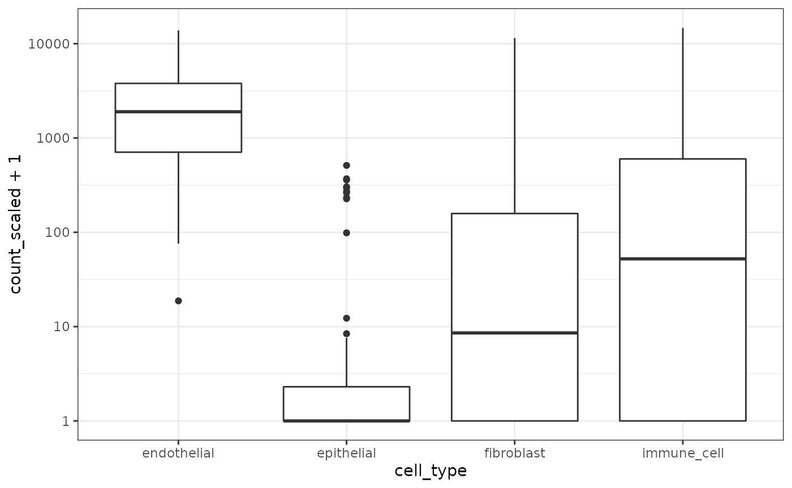
We can select some of the transcripts for further analysis using the tidygate package.
With tidygate, we can interactively draw gates to select points we want using gate. We specify which columns we want to plot in the scatterplot, and how many gates we want to draw. We can also specify the opacity if we want to make it easier to see overlapping points.
de_gate <- de_all %>% gate( feature, edgerQLT_PValue, deseq2_pvalue, opacity=0.3, how_many_gates = 2 )
We then click to draw gates around the points we want, for example as shown in the screenshot below.

That will add a column called gate, specifying which gate the points (transcripts) are in. The coordinates of the gates are stored in the “gate” attribute of the gate object and can be retrieved if desired.
de_gate %>% attr("gate")
We can also specify the coordinates for pre-selected gates with gate_list. This can be useful, for example, for reproducibility, if we want to reuse the coordinates of gates we’ve drawn.
# using pre-selected gates de_gate <- de_all %>% gate( feature, edgerQLT_PValue, deseq2_pvalue, gate_list = rpharma2020tidytranscriptomics::de_gate_gates ) de_gate #> # A tibble: 55,433 x 30 #> feature sample counts condition type symbol .abundant edgerQLT_logFC #> <chr> <fct> <int> <fct> <fct> <chr> <lgl> <dbl> #> 1 FBgn00… untrt1 92 untreated sing… a TRUE 0.0337 #> 2 FBgn00… untrt1 4664 untreated sing… Abl TRUE 0.249 #> 3 FBgn00… untrt1 583 untreated sing… abo TRUE 0.0569 #> 4 FBgn00… untrt1 1446 untreated sing… Acph-1 TRUE 0.0402 #> 5 FBgn00… untrt1 15 untreated sing… mAChR… TRUE -0.387 #> 6 FBgn00… untrt1 101664 untreated sing… Act5C TRUE -0.310 #> 7 FBgn00… untrt1 33402 untreated sing… Act42A TRUE -0.617 #> 8 FBgn00… untrt1 21 untreated sing… Act57B TRUE -0.491 #> 9 FBgn00… untrt1 12 untreated sing… Act87E TRUE -0.610 #> 10 FBgn00… untrt1 3026 untreated sing… Pfas TRUE 0.163 #> # … with 55,423 more rows, and 22 more variables: edgerQLT_logCPM <dbl>, #> # edgerQLT_F <dbl>, edgerQLT_PValue <dbl>, edgerQLT_FDR <dbl>, #> # edgerLR_logFC <dbl>, edgerLR_logCPM <dbl>, edgerLR_LR <dbl>, #> # edgerLR_PValue <dbl>, edgerLR_FDR <dbl>, voom_logFC <dbl>, #> # voom_AveExpr <dbl>, voom_t <dbl>, voom_P.Value <dbl>, voom_adj.P.Val <dbl>, #> # voom_B <dbl>, deseq2_baseMean <dbl>, deseq2_log2FoldChange <dbl>, #> # deseq2_lfcSE <dbl>, deseq2_stat <dbl>, deseq2_pvalue <dbl>, #> # deseq2_padj <dbl>, gate <chr>
We can check how many transcripts we’ve got in each gate.
de_gate %>% pivot_transcript() %>% dplyr::count(gate) #> # A tibble: 3 x 2 #> gate n #> <chr> <int> #> 1 0 7910 #> 2 1 5 #> 3 2 4
We can now select the transcripts from our two gates i.e. more significant in edgeR (gate 1) and more significant in DESeq2 (gate 2).
de_gate %>% # Generate scaled counts for plotting scale_abundance() %>% # Filter for transcripts within the gates filter(gate > 0) %>% # Rename for clarity mutate(gate = case_when( gate == 1 ~ "more in edgeR", gate == 2 ~ "more in DESeq2", TRUE ~ gate )) %>% # Order the plots for the transcripts mutate(feature = fct_reorder(feature, edgerQLT_PValue, min)) %>% # Plot ggplot(aes(condition, counts_scaled, color=gate)) + geom_point() + facet_wrap(~feature, scale="free_y") + custom_theme
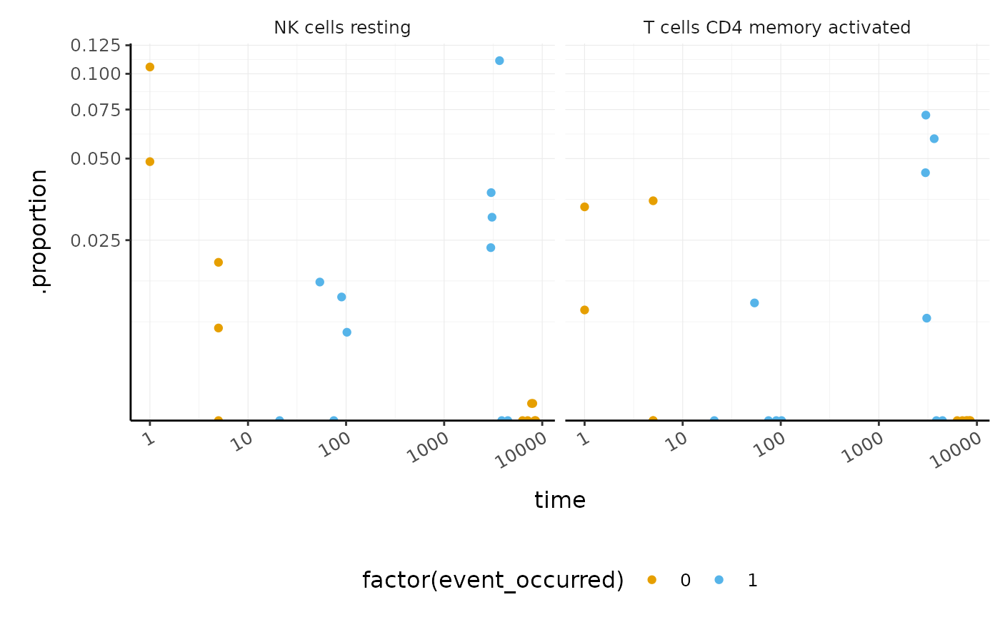
This enables us to see, for example, that DESeq2 produces a more conservative logFC statistic for the transcript FBgn0052939 .
de_gate %>% pivot_transcript %>% filter(feature == "FBgn0052939")%>% select(edgerQLT_logFC, deseq2_log2FoldChange) #> # A tibble: 1 x 2 #> edgerQLT_logFC deseq2_log2FoldChange #> <dbl> <dbl> #> 1 2.37 1.65
Poll: For the top ranked genes, DESeq2 estimates lower p.values compared to limma-voom. Roughly, around what gene rank does the significance trend of DESeq2 cross the one of limma-voom?Cell type composition analysis
If we are sequencing tissue samples, we may want to know what cell types are present and if there are differences in expression between them. tidybulk has a deconvolve_cellularity function that can help us do this.
For this example we will use a subset of the breast cancer dataset from The Cancer Genome Atlas (TCGA).
BRCA_tidy <- rpharma2020tidytranscriptomics::BRCA %>% tidybulk(patient, transcript, count) BRCA_tidy #> # A tibble: 198,374 x 5 #> patient transcript count time event_occurred #> <fct> <fct> <int> <dbl> <int> #> 1 TCGA-C8-A275 C1orf112 1571 1 0 #> 2 TCGA-C8-A275 FGR 1873 1 0 #> 3 TCGA-C8-A275 FUCA2 3770 1 0 #> 4 TCGA-C8-A275 GCLC 2738 1 0 #> 5 TCGA-C8-A275 LAS1L 3175 1 0 #> 6 TCGA-C8-A275 ENPP4 1340 1 0 #> 7 TCGA-C8-A275 SEMA3F 5479 1 0 #> 8 TCGA-C8-A275 RAD52 472 1 0 #> 9 TCGA-C8-A275 BAD 1761 1 0 #> 10 TCGA-C8-A275 CD99 14697 1 0 #> # … with 198,364 more rows
With tidybulk, we can easily infer the proportions of cell types within a tissue using one of several published methods (Cibersort (Newman et al. 2015), EPIC (Racle et al. 2017) and llsr (Abbas et al. 2009)). Here we will use Cibersort which provides a default signature called LM22 to define the cell types. LM22 contains 547 genes that identify 22 human immune cell types.
BRCA_cell_type <- BRCA_tidy %>% deconvolve_cellularity(action="get") #> Installing e1071 needed for Cibersort #> Installing package into '/tmp/RtmpANupm5/temp_libpath1ee3693588f6' #> (as 'lib' is unspecified) BRCA_cell_type #> # A tibble: 22 x 25 #> patient time event_occurred `cibersort: B c… `cibersort: B c… #> <chr> <dbl> <int> <dbl> <dbl> #> 1 TCGA-C… 1 0 0.0325 0 #> 2 TCGA-A… 1 0 0.0170 0 #> 3 TCGA-A… 5 0 0.00127 0 #> 4 TCGA-C… 5 0 0.0372 0 #> 5 TCGA-P… 5 0 0.00453 0 #> 6 TCGA-B… 6292 0 0.144 0 #> 7 TCGA-B… 7106 0 0.0632 0 #> 8 TCGA-B… 7777 0 0 0.0142 #> 9 TCGA-B… 8008 0 0.203 0 #> 10 TCGA-B… 8391 0 0.147 0 #> # … with 12 more rows, and 20 more variables: `cibersort: Plasma cells` <dbl>, #> # `cibersort: T cells CD8` <dbl>, `cibersort: T cells CD4 naive` <dbl>, #> # `cibersort: T cells CD4 memory resting` <dbl>, `cibersort: T cells CD4 #> # memory activated` <dbl>, `cibersort: T cells follicular helper` <dbl>, #> # `cibersort: T cells regulatory (Tregs)` <dbl>, `cibersort: T cells gamma #> # delta` <dbl>, `cibersort: NK cells resting` <dbl>, `cibersort: NK cells #> # activated` <dbl>, `cibersort: Monocytes` <dbl>, `cibersort: Macrophages #> # M0` <dbl>, `cibersort: Macrophages M1` <dbl>, `cibersort: Macrophages #> # M2` <dbl>, `cibersort: Dendritic cells resting` <dbl>, `cibersort: #> # Dendritic cells activated` <dbl>, `cibersort: Mast cells resting` <dbl>, #> # `cibersort: Mast cells activated` <dbl>, `cibersort: Eosinophils` <dbl>, #> # `cibersort: Neutrophils` <dbl>
Cell type proportions are added to the tibble as new columns. The prefix makes it easy to reshape the data frame if needed, for visualisation or further analyses.
BRCA_cell_type_long <- BRCA_cell_type %>% # Reshape pivot_longer( contains("cibersort"), names_prefix = "cibersort: ", names_to = "cell_type", values_to = "proportion" ) BRCA_cell_type_long #> # A tibble: 484 x 5 #> patient time event_occurred cell_type proportion #> <chr> <dbl> <int> <chr> <dbl> #> 1 TCGA-C8-A275 1 0 B cells naive 0.0325 #> 2 TCGA-C8-A275 1 0 B cells memory 0 #> 3 TCGA-C8-A275 1 0 Plasma cells 0.0127 #> 4 TCGA-C8-A275 1 0 T cells CD8 0 #> 5 TCGA-C8-A275 1 0 T cells CD4 naive 0.0507 #> 6 TCGA-C8-A275 1 0 T cells CD4 memory resting 0.0299 #> 7 TCGA-C8-A275 1 0 T cells CD4 memory activated 0.0332 #> 8 TCGA-C8-A275 1 0 T cells follicular helper 0 #> 9 TCGA-C8-A275 1 0 T cells regulatory (Tregs) 0.0326 #> 10 TCGA-C8-A275 1 0 T cells gamma delta 0.0247 #> # … with 474 more rows
Note
Creating intermediary variables such as BRCA_cell_type_long here is useful for education, however is not needed nor recommended in normal circumstances. The %>% can be used to directly plot the data. ***
We can plot the proportions of immune cell types for each patient.
BRCA_cell_type_long %>% # Plot proportions ggplot(aes(x=patient, y=proportion, fill=cell_type)) + geom_bar(stat = "identity") + custom_theme
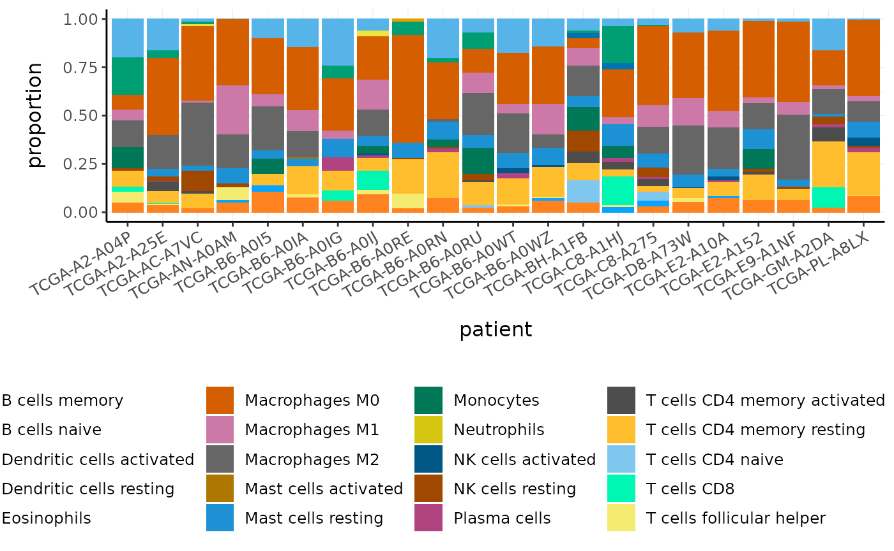
We can visualise the similarity of the tissue composition for the patients by performing a dimensionality reduction on cell type and proportion (rather than on transcript and counts as we did previously).
BRCA_cell_type_long %>% # Filter cell types with proportion zero in all patients group_by(cell_type) %>% filter(sum(proportion) > 0) %>% ungroup() %>% reduce_dimensions( patient, cell_type, proportion, method="PCA", action="get" ) %>% ggplot(aes(PC1, PC2, label=patient)) + geom_point(color="red") + ggrepel::geom_text_repel(size=3) + custom_theme #> Getting the 21 most variable genes #> Fraction of variance explained by the selected principal components #> # A tibble: 2 x 2 #> `Fraction of variance` PC #> <dbl> <int> #> 1 0.183 1 #> 2 0.152 2 #> tidybulk says: to access the raw results do `attr(..., "internals")$PCA`
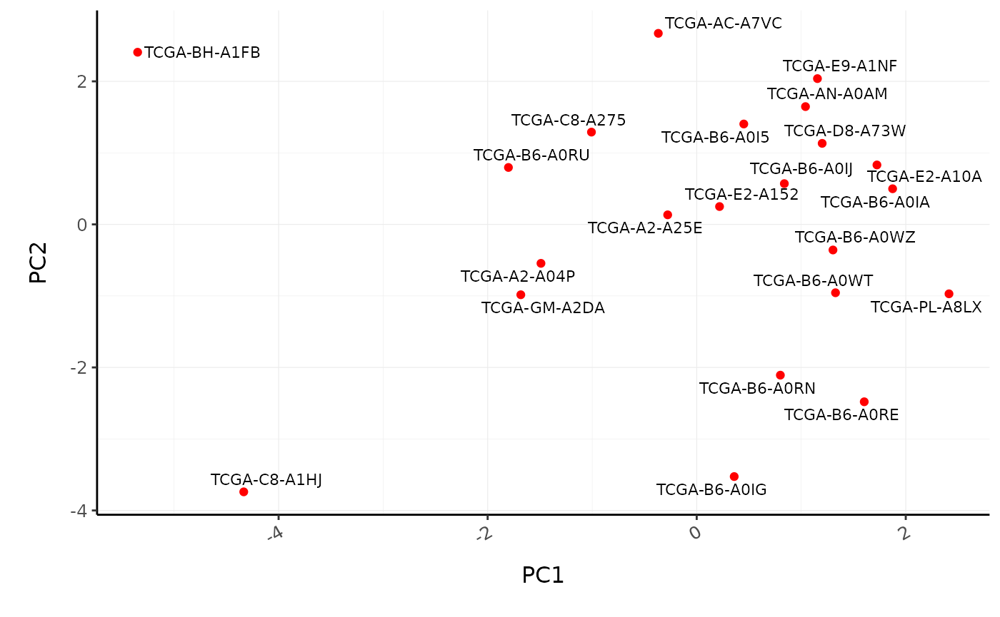
Poll: What is the most abundant cell type overall in BRCA samples?We can also perform differential tissue composition analyses, similar to how we performed differential transcript abundance analyses. We use tidybulk’s test_differential_cellularity and can perform our analyses using a known factor of interest, such as tumour subtype, or using survival data. Here we use survival data available from TCGA (Liu et al. 2018).
library(survival) BRCA_tidy_survival <- BRCA_tidy %>% test_differential_cellularity(Surv(time, event_occurred) ~ . ) %>% arrange(p.value) #> Installing broom needed for analyses #> Installing package into '/tmp/RtmpANupm5/temp_libpath1ee3693588f6' #> (as 'lib' is unspecified) BRCA_tidy_survival %>% dplyr::select(.cell_type, p.value, everything()) #> # A tibble: 22 x 6 #> .cell_type p.value cell_type_proport… estimate std.error statistic #> <chr> <dbl> <list> <dbl> <dbl> <dbl> #> 1 NK cells resting 0.0863 <tibble [22 × 6]> 0.330 0.192 1.72 #> 2 T cells CD4 memory a… 0.0884 <tibble [22 × 6]> 0.313 0.184 1.70 #> 3 Mast cells resting 0.150 <tibble [22 × 6]> -0.379 0.264 -1.44 #> 4 T cells CD4 memory r… 0.161 <tibble [22 × 6]> -0.865 0.617 -1.40 #> 5 Macrophages M2 0.164 <tibble [22 × 6]> 0.365 0.262 1.39 #> 6 T cells gamma delta 0.291 <tibble [22 × 6]> -0.534 0.506 -1.06 #> 7 T cells regulatory (… 0.330 <tibble [22 × 6]> -0.496 0.509 -0.975 #> 8 T cells follicular h… 0.372 <tibble [22 × 6]> -0.205 0.229 -0.893 #> 9 Macrophages M0 0.520 <tibble [22 × 6]> -0.248 0.385 -0.643 #> 10 T cells CD4 naive 0.579 <tibble [22 × 6]> 0.113 0.204 0.555 #> # … with 12 more rows
We can visualise the proportions for the cell types most associated with survival.
BRCA_tidy_survival %>% dplyr::slice(1:2) %>% unnest(cell_type_proportions) %>% ggplot(aes(time, .proportion, color = factor(event_occurred))) + geom_point() + facet_wrap(~ .cell_type) + scale_x_log10() + scale_y_continuous(trans = "logit") + custom_theme #> Warning: Transformation introduced infinite values in continuous y-axis

Key Points
-
tidybulkallows streamlined multi-method analyses -
tidygateallows the selection of arbitrary points in a two-dimensional plot, and add the gate information to the input tibble -
tidybulkallow easy analyses of cell type composition - Testing for differences in tissue composition between samples is analogous to the testing for differences in transcript abundance
Supplementary
Some things we don’t have time to cover in Part 2 of this workshop can be found in the Supplementary material.
Part 3 Single-cell RNA-seq
tidyseurat provides a bridge between the Seurat single-cell package (Butler et al. 2018; Stuart et al. 2019) and the tidyverse (Wickham et al. 2019). It creates an invisible layer that enables viewing the Seurat object as a tidyverse tibble, and provides Seurat-compatible dplyr, tidyr, ggplot and plotly functions.
Create tidyseurat
This is a seurat object but it is evaluated as tibble. So it is fully compatible both with Seurat and tidyverse APIs.
pbmc_small_tidy <- tidyseurat::pbmc_small %>% tidy()
It looks like a tibble
pbmc_small_tidy #> # A tibble: 80 x 16 #> cell orig.ident nCount_RNA nFeature_RNA RNA_snn_res.0.8 letter.idents groups #> <chr> <fct> <dbl> <int> <fct> <fct> <chr> #> 1 ATGC… SeuratPro… 70 47 0 A g2 #> 2 CATG… SeuratPro… 85 52 0 A g1 #> 3 GAAC… SeuratPro… 87 50 1 B g2 #> 4 TGAC… SeuratPro… 127 56 0 A g2 #> 5 AGTC… SeuratPro… 173 53 0 A g2 #> 6 TCTG… SeuratPro… 70 48 0 A g1 #> 7 TGGT… SeuratPro… 64 36 0 A g1 #> 8 GCAG… SeuratPro… 72 45 0 A g1 #> 9 GATA… SeuratPro… 52 36 0 A g1 #> 10 AATG… SeuratPro… 100 41 0 A g1 #> # … with 70 more rows, and 9 more variables: RNA_snn_res.1 <fct>, file <chr>, #> # PC_1 <dbl>, PC_2 <dbl>, PC_3 <dbl>, PC_4 <dbl>, PC_5 <dbl>, tSNE_1 <dbl>, #> # tSNE_2 <dbl>
But it is a Seurat object after all
pbmc_small_tidy@assays #> $RNA #> Assay data with 230 features for 80 cells #> Top 10 variable features: #> PPBP, IGLL5, VDAC3, CD1C, AKR1C3, PF4, MYL9, GNLY, TREML1, CA2
Preprocess the dataset
pbmc_small_pca <- pbmc_small_tidy %>% SCTransform(verbose = FALSE) %>% FindVariableFeatures(verbose = FALSE) %>% RunPCA(verbose = FALSE) pbmc_small_pca #> # A tibble: 80 x 18 #> cell orig.ident nCount_RNA nFeature_RNA RNA_snn_res.0.8 letter.idents groups #> <chr> <fct> <dbl> <int> <fct> <fct> <chr> #> 1 ATGC… SeuratPro… 70 47 0 A g2 #> 2 CATG… SeuratPro… 85 52 0 A g1 #> 3 GAAC… SeuratPro… 87 50 1 B g2 #> 4 TGAC… SeuratPro… 127 56 0 A g2 #> 5 AGTC… SeuratPro… 173 53 0 A g2 #> 6 TCTG… SeuratPro… 70 48 0 A g1 #> 7 TGGT… SeuratPro… 64 36 0 A g1 #> 8 GCAG… SeuratPro… 72 45 0 A g1 #> 9 GATA… SeuratPro… 52 36 0 A g1 #> 10 AATG… SeuratPro… 100 41 0 A g1 #> # … with 70 more rows, and 11 more variables: RNA_snn_res.1 <fct>, file <chr>, #> # nCount_SCT <dbl>, nFeature_SCT <int>, PC_1 <dbl>, PC_2 <dbl>, PC_3 <dbl>, #> # PC_4 <dbl>, PC_5 <dbl>, tSNE_1 <dbl>, tSNE_2 <dbl>
Identify clusters
We proceed with cluster identification with Seurat.
pbmc_small_cluster <- pbmc_small_pca %>% FindNeighbors(verbose = FALSE) %>% FindClusters(method = "igraph", verbose = FALSE) pbmc_small_cluster #> # A tibble: 80 x 20 #> cell orig.ident nCount_RNA nFeature_RNA RNA_snn_res.0.8 letter.idents groups #> <chr> <fct> <dbl> <int> <fct> <fct> <chr> #> 1 ATGC… SeuratPro… 70 47 0 A g2 #> 2 CATG… SeuratPro… 85 52 0 A g1 #> 3 GAAC… SeuratPro… 87 50 1 B g2 #> 4 TGAC… SeuratPro… 127 56 0 A g2 #> 5 AGTC… SeuratPro… 173 53 0 A g2 #> 6 TCTG… SeuratPro… 70 48 0 A g1 #> 7 TGGT… SeuratPro… 64 36 0 A g1 #> 8 GCAG… SeuratPro… 72 45 0 A g1 #> 9 GATA… SeuratPro… 52 36 0 A g1 #> 10 AATG… SeuratPro… 100 41 0 A g1 #> # … with 70 more rows, and 13 more variables: RNA_snn_res.1 <fct>, file <chr>, #> # nCount_SCT <dbl>, nFeature_SCT <int>, SCT_snn_res.0.8 <fct>, #> # seurat_clusters <fct>, PC_1 <dbl>, PC_2 <dbl>, PC_3 <dbl>, PC_4 <dbl>, #> # PC_5 <dbl>, tSNE_1 <dbl>, tSNE_2 <dbl>
Now we can interrogate the object as if it was a regular tibble data frame.
pbmc_small_cluster %>% tidyseurat::count(groups, seurat_clusters) #> tidyseurat says: A data frame is returned for independent data analysis. #> # A tibble: 8 x 3 #> groups seurat_clusters n #> <chr> <fct> <int> #> 1 g1 0 17 #> 2 g1 1 14 #> 3 g1 2 9 #> 4 g1 3 4 #> 5 g2 0 13 #> 6 g2 1 12 #> 7 g2 2 6 #> 8 g2 3 5
We can identify cluster markers using Seurat.
# Identify top 10 markers per cluster markers <- pbmc_small_cluster %>% FindAllMarkers(only.pos = TRUE, min.pct = 0.25, thresh.use = 0.25) %>% group_by(cluster) %>% top_n(10, avg_logFC) #> Calculating cluster 0 #> Calculating cluster 1 #> Calculating cluster 2 #> Calculating cluster 3 # Plot heatmap pbmc_small_cluster %>% DoHeatmap( features = markers$gene, group.colors = friendly_cols )

Reduce dimensions
We can calculate the first 3 UMAP dimensions using the Seurat framework.
pbmc_small_UMAP <- pbmc_small_cluster %>% RunUMAP(reduction = "pca", dims = 1:15, n.components = 3L, ) #> Warning: The default method for RunUMAP has changed from calling Python UMAP via reticulate to the R-native UWOT using the cosine metric #> To use Python UMAP via reticulate, set umap.method to 'umap-learn' and metric to 'correlation' #> This message will be shown once per session #> 08:51:18 UMAP embedding parameters a = 0.9922 b = 1.112 #> 08:51:18 Read 80 rows and found 15 numeric columns #> 08:51:18 Using Annoy for neighbor search, n_neighbors = 30 #> 08:51:18 Building Annoy index with metric = cosine, n_trees = 50 #> 0% 10 20 30 40 50 60 70 80 90 100% #> [----|----|----|----|----|----|----|----|----|----| #> **************************************************| #> 08:51:18 Writing NN index file to temp file /tmp/RtmpIKdzBv/file20401c78f5ac #> 08:51:18 Searching Annoy index using 1 thread, search_k = 3000 #> 08:51:18 Annoy recall = 100% #> 08:51:19 Commencing smooth kNN distance calibration using 1 thread #> 08:51:21 Initializing from normalized Laplacian + noise #> 08:51:21 Commencing optimization for 500 epochs, with 2040 positive edges #> 08:51:22 Optimization finished
And we can plot them using 3D plot using plotly.
pbmc_small_UMAP %>% plot_ly( x = ~`UMAP_1`, y = ~`UMAP_2`, z = ~`UMAP_3`, color = ~seurat_clusters, colors = friendly_cols[1:4] )

Cell type classification
We can infer cell type identities using SingleR (Aran et al. 2019) and manipulate the output using tidyverse.
# Get cell type reference data blueprint <- celldex::BlueprintEncodeData() # Infer cell identities cell_type_df <- pbmc_small_UMAP@assays[["SCT"]]@counts %>% log1p() %>% Matrix::Matrix(sparse = TRUE) %>% SingleR::SingleR( ref = blueprint, labels = blueprint$label.main, method = "single" ) %>% as.data.frame() %>% as_tibble(rownames = "cell") %>% select(cell, first.labels)
# Join UMAP and cell type info pbmc_small_cell_type <- pbmc_small_UMAP %>% left_join(cell_type_df, by = "cell") # Reorder columns pbmc_small_cell_type %>% tidyseurat::select(cell, first.labels, everything()) #> # A tibble: 80 x 24 #> cell first.labels orig.ident nCount_RNA nFeature_RNA RNA_snn_res.0.8 #> <chr> <chr> <fct> <dbl> <int> <fct> #> 1 ATGC… CD4+ T-cells SeuratPro… 70 47 0 #> 2 CATG… CD8+ T-cells SeuratPro… 85 52 0 #> 3 GAAC… CD8+ T-cells SeuratPro… 87 50 1 #> 4 TGAC… CD4+ T-cells SeuratPro… 127 56 0 #> 5 AGTC… CD4+ T-cells SeuratPro… 173 53 0 #> 6 TCTG… CD4+ T-cells SeuratPro… 70 48 0 #> 7 TGGT… CD4+ T-cells SeuratPro… 64 36 0 #> 8 GCAG… CD4+ T-cells SeuratPro… 72 45 0 #> 9 GATA… CD4+ T-cells SeuratPro… 52 36 0 #> 10 AATG… CD4+ T-cells SeuratPro… 100 41 0 #> # … with 70 more rows, and 18 more variables: letter.idents <fct>, #> # groups <chr>, RNA_snn_res.1 <fct>, file <chr>, nCount_SCT <dbl>, #> # nFeature_SCT <int>, SCT_snn_res.0.8 <fct>, seurat_clusters <fct>, #> # PC_1 <dbl>, PC_2 <dbl>, PC_3 <dbl>, PC_4 <dbl>, PC_5 <dbl>, tSNE_1 <dbl>, #> # tSNE_2 <dbl>, UMAP_1 <dbl>, UMAP_2 <dbl>, UMAP_3 <dbl>
We can easily summarise the results. For example, we can see how cell type classification overlaps with cluster classification.
pbmc_small_cell_type %>% count(seurat_clusters, first.labels) #> tidyseurat says: A data frame is returned for independent data analysis. #> # A tibble: 9 x 3 #> seurat_clusters first.labels n #> <fct> <chr> <int> #> 1 0 CD4+ T-cells 8 #> 2 0 CD8+ T-cells 10 #> 3 0 NK cells 12 #> 4 1 Macrophages 1 #> 5 1 Monocytes 25 #> 6 2 B-cells 10 #> 7 2 Macrophages 1 #> 8 2 Monocytes 4 #> 9 3 Erythrocytes 9
Nested analyses
A powerful tool we can use with tidyseurat is nest. We can easily perform independent analyses on subsets of the dataset. First we classify cell types in lymphoid and myeloid; then, nest based on the new classification
pbmc_small_nested <- pbmc_small_cell_type %>% filter(first.labels != "Erythrocytes") %>% mutate(cell_class = if_else(`first.labels` %in% c("Macrophages", "Monocytes"), "myeloid", "lymphoid")) %>% nest(data = -cell_class) pbmc_small_nested #> # A tibble: 2 x 2 #> cell_class data #> <chr> <list> #> 1 lymphoid <tidysert> #> 2 myeloid <tidysert>
Now we can independently for the lymphoid and myeloid subsets (i) find variable features, (ii) reduce dimensions, and (iii) cluster using both tidyverse and Seurat seamlessly.
pbmc_small_nested_reanalysed <- pbmc_small_nested %>% mutate(data = map( data, ~ .x %>% FindVariableFeatures(verbose = FALSE) %>% RunPCA(npcs = 10, verbose = FALSE) %>% FindNeighbors(verbose = FALSE) %>% FindClusters(method = "igraph", verbose = FALSE) %>% RunUMAP(reduction = "pca", dims = 1:10, n.components = 3L, verbose = FALSE) )) pbmc_small_nested_reanalysed #> # A tibble: 2 x 2 #> cell_class data #> <chr> <list> #> 1 lymphoid <tidysert> #> 2 myeloid <tidysert>
Key Points
- Some basic steps of a single-cell RNA sequencing analysis are dimensionality reduction, cluster identification and cell type classification
-
tidyseuratis an invisible layer that operates on aSeuratobject and enables us to visualise and manipulate data as if it were a tidy data frame. -
tidyseuratobject is aSeurat objectso it can be used with anySeuratcompatible method
Contributing
If you want to suggest improvements for this workshop or ask questions, you can do so as described here.
Reproducibility
Record package and version information with sessionInfo
sessionInfo() #> R version 4.0.2 (2020-06-22) #> Platform: x86_64-pc-linux-gnu (64-bit) #> Running under: Ubuntu 20.04 LTS #> #> Matrix products: default #> BLAS/LAPACK: /usr/lib/x86_64-linux-gnu/openblas-pthread/libopenblasp-r0.3.8.so #> #> locale: #> [1] LC_CTYPE=en_US.UTF-8 LC_NUMERIC=C #> [3] LC_TIME=en_US.UTF-8 LC_COLLATE=en_US.UTF-8 #> [5] LC_MONETARY=en_US.UTF-8 LC_MESSAGES=C #> [7] LC_PAPER=en_US.UTF-8 LC_NAME=C #> [9] LC_ADDRESS=C LC_TELEPHONE=C #> [11] LC_MEASUREMENT=en_US.UTF-8 LC_IDENTIFICATION=C #> #> attached base packages: #> [1] parallel stats4 stats graphics grDevices utils datasets #> [8] methods base #> #> other attached packages: #> [1] tidyseurat_0.1.8 Seurat_3.2.2 #> [3] purrr_0.3.4 survival_3.2-7 #> [5] GGally_2.0.0 tidygate_0.2.8 #> [7] forcats_0.5.0 tidybulk_1.1.8 #> [9] tidyHeatmap_1.1.5 ggrepel_0.8.2 #> [11] plotly_4.9.2.1 ggplot2_3.3.2 #> [13] stringr_1.4.0 readr_1.3.1 #> [15] tidyr_1.1.2 dplyr_1.0.2 #> [17] tibble_3.0.3 airway_1.9.0 #> [19] SummarizedExperiment_1.19.9 Biobase_2.49.1 #> [21] GenomicRanges_1.41.6 GenomeInfoDb_1.25.11 #> [23] IRanges_2.23.10 S4Vectors_0.27.13 #> [25] BiocGenerics_0.35.4 MatrixGenerics_1.1.3 #> [27] matrixStats_0.57.0 #> #> loaded via a namespace (and not attached): #> [1] utf8_1.1.4 reticulate_1.16 #> [3] tidyselect_1.1.0 RSQLite_2.2.1 #> [5] AnnotationDbi_1.51.3 htmlwidgets_1.5.2 #> [7] grid_4.0.2 BiocParallel_1.23.2 #> [9] Rtsne_0.15 munsell_0.5.0 #> [11] codetools_0.2-16 ragg_0.3.1 #> [13] ica_1.0-2 preprocessCore_1.51.0 #> [15] future_1.19.1 miniUI_0.1.1.1 #> [17] withr_2.3.0 colorspace_1.4-1 #> [19] knitr_1.30 SingleCellExperiment_1.11.8 #> [21] ROCR_1.0-11 tensor_1.5 #> [23] rpharma2020tidytranscriptomics_1.0.6 listenv_0.8.0 #> [25] labeling_0.3 GenomeInfoDbData_1.2.3 #> [27] polyclip_1.10-0 bit64_4.0.5 #> [29] farver_2.0.3 pheatmap_1.0.12 #> [31] rprojroot_1.3-2 vctrs_0.3.4 #> [33] generics_0.0.2 xfun_0.18 #> [35] dittoSeq_1.1.9 R6_2.4.1 #> [37] clue_0.3-57 rsvd_1.0.3 #> [39] locfit_1.5-9.4 bitops_1.0-6 #> [41] spatstat.utils_1.17-0 reshape_0.8.8 #> [43] DelayedArray_0.15.14 assertthat_0.2.1 #> [45] promises_1.1.1 scales_1.1.1 #> [47] gtable_0.3.0 globals_0.13.0 #> [49] goftest_1.2-2 rlang_0.4.7 #> [51] genefilter_1.71.0 systemfonts_0.3.2 #> [53] GlobalOptions_0.1.2 splines_4.0.2 #> [55] lazyeval_0.2.2 broom_0.7.1 #> [57] yaml_2.2.1 reshape2_1.4.4 #> [59] abind_1.4-5 crosstalk_1.1.0.1 #> [61] backports_1.1.10 httpuv_1.5.4 #> [63] tools_4.0.2 ellipsis_0.3.1 #> [65] RColorBrewer_1.1-2 ggridges_0.5.2 #> [67] Rcpp_1.0.5 plyr_1.8.6 #> [69] zlibbioc_1.35.0 RCurl_1.98-1.2 #> [71] rpart_4.1-15 deldir_0.1-29 #> [73] pbapply_1.4-3 GetoptLong_1.0.3 #> [75] viridis_0.5.1 cowplot_1.1.0 #> [77] zoo_1.8-8 cluster_2.1.0 #> [79] fs_1.5.0 magrittr_1.5 #> [81] RSpectra_0.16-0 data.table_1.13.0 #> [83] circlize_0.4.10 lmtest_0.9-38 #> [85] RANN_2.6.1 fitdistrplus_1.1-1 #> [87] hms_0.5.3 patchwork_1.0.1 #> [89] mime_0.9 evaluate_0.14 #> [91] xtable_1.8-4 XML_3.99-0.5 #> [93] gridExtra_2.3 shape_1.4.5 #> [95] compiler_4.0.2 KernSmooth_2.23-17 #> [97] crayon_1.3.4 htmltools_0.5.0 #> [99] mgcv_1.8-33 later_1.1.0.1 #> [101] geneplotter_1.67.0 DBI_1.1.0 #> [103] ComplexHeatmap_2.5.5 MASS_7.3-53 #> [105] rappdirs_0.3.1 boot_1.3-25 #> [107] Matrix_1.2-18 cli_2.0.2 #> [109] igraph_1.2.5 pkgconfig_2.0.3 #> [111] pkgdown_1.6.1 annotate_1.67.1 #> [113] XVector_0.29.3 digest_0.6.25 #> [115] sctransform_0.3 RcppAnnoy_0.0.16 #> [117] spatstat.data_1.4-3 rmarkdown_2.4 #> [119] leiden_0.3.3 uwot_0.1.8 #> [121] edgeR_3.31.4 shiny_1.5.0 #> [123] rjson_0.2.20 lifecycle_0.2.0 #> [125] nlme_3.1-149 jsonlite_1.7.1 #> [127] org.Dm.eg.db_3.11.4 desc_1.2.0 #> [129] viridisLite_0.3.0 limma_3.45.14 #> [131] fansi_0.4.1 pillar_1.4.6 #> [133] lattice_0.20-41 fastmap_1.0.1 #> [135] httr_1.4.2 glue_1.4.2 #> [137] spatstat_1.64-1 png_0.1-7 #> [139] bit_4.0.4 stringi_1.5.3 #> [141] blob_1.2.1 DESeq2_1.29.14 #> [143] org.Hs.eg.db_3.11.4 memoise_1.1.0 #> [145] irlba_2.3.3 future.apply_1.6.0
References
Abbas, Alexander R, Kristen Wolslegel, Dhaya Seshasayee, Zora Modrusan, and Hilary F Clark. 2009. “Deconvolution of Blood Microarray Data Identifies Cellular Activation Patterns in Systemic Lupus Erythematosus.” PloS One 4 (7): e6098.
Aran, Dvir, Agnieszka P Looney, Leqian Liu, Esther Wu, Valerie Fong, Austin Hsu, Suzanna Chak, et al. 2019. “Reference-Based Analysis of Lung Single-Cell Sequencing Reveals a Transitional Profibrotic Macrophage.” Nature Immunology 20 (2): 163–72.
Brooks, Angela N, Li Yang, Michael O Duff, Kasper D Hansen, Jung W Park, Sandrine Dudoit, Steven E Brenner, and Brenton R Graveley. 2011. “Conservation of an Rna Regulatory Map Between Drosophila and Mammals.” Genome Research 21 (2): 193–202.
Butler, Andrew, Paul Hoffman, Peter Smibert, Efthymia Papalexi, and Rahul Satija. 2018. “Integrating Single-Cell Transcriptomic Data Across Different Conditions, Technologies, and Species.” Nature Biotechnology 36 (5): 411–20.
Chen, Yunshun, Aaron TL Lun, and Gordon K Smyth. 2016. “From Reads to Genes to Pathways: Differential Expression Analysis of Rna-Seq Experiments Using Rsubread and the edgeR Quasi-Likelihood Pipeline.” F1000Research 5.
Himes, Blanca E, Xiaofeng Jiang, Peter Wagner, Ruoxi Hu, Qiyu Wang, Barbara Klanderman, Reid M Whitaker, et al. 2014. “RNA-Seq Transcriptome Profiling Identifies Crispld2 as a Glucocorticoid Responsive Gene That Modulates Cytokine Function in Airway Smooth Muscle Cells.” PloS One 9 (6): e99625.
Law, Charity W, Monther Alhamdoosh, Shian Su, Xueyi Dong, Luyi Tian, Gordon K Smyth, and Matthew E Ritchie. 2016. “RNA-Seq Analysis Is Easy as 1-2-3 with Limma, Glimma and edgeR.” F1000Research 5.
Law, Charity W, Yunshun Chen, Wei Shi, and Gordon K Smyth. 2014. “Voom: Precision Weights Unlock Linear Model Analysis Tools for Rna-Seq Read Counts.” Genome Biology 15 (2): R29.
Liu, Jianfang, Tara Lichtenberg, Katherine A Hoadley, Laila M Poisson, Alexander J Lazar, Andrew D Cherniack, Albert J Kovatich, et al. 2018. “An Integrated Tcga Pan-Cancer Clinical Data Resource to Drive High-Quality Survival Outcome Analytics.” Cell 173 (2): 400–416.
Love, Michael I, Wolfgang Huber, and Simon Anders. 2014. “Moderated Estimation of Fold Change and Dispersion for Rna-Seq Data with Deseq2.” Genome Biology 15 (12): 550.
Mangiola, Stefano, and Anthony T Papenfuss. 2020. “TidyHeatmap: An R Package for Modular Heatmap Production Based on Tidy Principles.” Journal of Open Source Software 5 (52): 2472.
McCarthy, Davis J, Yunshun Chen, and Gordon K Smyth. 2012. “Differential Expression Analysis of Multifactor Rna-Seq Experiments with Respect to Biological Variation.” Nucleic Acids Research 40 (10): 4288–97.
Newman, Aaron M, Chih Long Liu, Michael R Green, Andrew J Gentles, Weiguo Feng, Yue Xu, Chuong D Hoang, Maximilian Diehn, and Ash A Alizadeh. 2015. “Robust Enumeration of Cell Subsets from Tissue Expression Profiles.” Nature Methods 12 (5): 453–57.
Racle, Julien, Kaat de Jonge, Petra Baumgaertner, Daniel E Speiser, and David Gfeller. 2017. “Simultaneous Enumeration of Cancer and Immune Cell Types from Bulk Tumor Gene Expression Data.” Elife 6: e26476.
Robinson, Mark D, Davis J McCarthy, and Gordon K Smyth. 2010. “EdgeR: A Bioconductor Package for Differential Expression Analysis of Digital Gene Expression Data.” Bioinformatics 26 (1): 139–40.
Robinson, Mark D, and Alicia Oshlack. 2010. “A Scaling Normalization Method for Differential Expression Analysis of Rna-Seq Data.” Genome Biology 11 (3): 1–9.
Stuart, Tim, Andrew Butler, Paul Hoffman, Christoph Hafemeister, Efthymia Papalexi, William M Mauck III, Yuhan Hao, Marlon Stoeckius, Peter Smibert, and Rahul Satija. 2019. “Comprehensive Integration of Single-Cell Data.” Cell 177 (7): 1888–1902.
Wickham, Hadley, Mara Averick, Jennifer Bryan, Winston Chang, Lucy D’Agostino McGowan, Romain François, Garrett Grolemund, et al. 2019. “Welcome to the Tidyverse.” Journal of Open Source Software 4 (43): 1686.
Wickham, Hadley, and others. 2014. “Tidy Data.” Journal of Statistical Software 59 (10): 1–23.